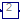

For all models in this package an FMU must be generated
Extends from Modelica.Icons.Package (Icon for standard packages).
| Name | Description |
|---|---|
|  SimpleNonlinearModel2 |
 FMITest.Initialization.NonlinearSystems.SimpleSteadyState.FMUModels.SimpleNonlinearModel1
FMITest.Initialization.NonlinearSystems.SimpleSteadyState.FMUModels.SimpleNonlinearModel1

Extends from Modelica.Blocks.Interfaces.SISO (Single Input Single Output continuous control block).
| Type | Name | Description |
|---|---|---|
| input RealInput | u | Connector of Real input signal |
| output RealOutput | y | Connector of Real output signal |
Extends from SimpleNonlinearModel1.
| Type | Name | Default | Description |
|---|---|---|---|
| Initialization | |||
| Real | x.start | 2 | |
| Type | Name | Description |
|---|---|---|
| input RealInput | u | Connector of Real input signal |
| output RealOutput | y | Connector of Real output signal |